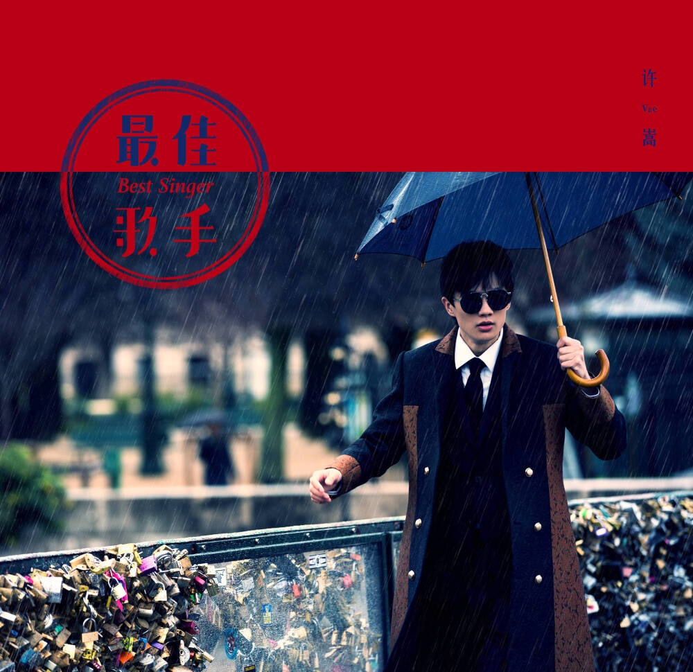
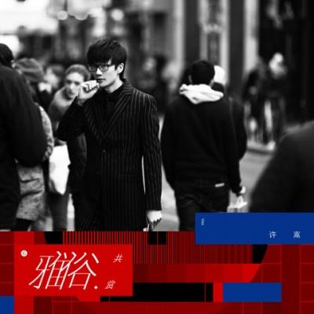

播放列表
×







var lyrics={
最佳歌手:"[00:00.00]最佳歌手-许嵩(VaeXu)[00:00.88]词：许嵩[00:01.76]曲：许嵩[00:02.64]我们最好的遇见[00:04.85][00:06.42]是现在这样的四月[00:08.74][00:10.57]柳絮抚着那条街[00:12.70][00:14.38]像大雪一样的热烈[00:17.43][00:18.39]你轻轻唱起我的歌[00:21.18][00:22.24]我受宠若惊的喜悦[00:24.90][00:26.52]绝佳的歌艺里面[00:29.09][00:30.33]多少故事做铺垫[00:33.42][00:38.55]我们最好的告别[00:40.73][00:42.39]是现在这样没红眼[00:44.62][00:46.48]因你而起的一泓喜悲[00:49.53][00:50.05]权当年轻留个纪念[00:52.69][00:54.53]清晨回笼做了梦[00:56.95][00:58.34]你成明星开演唱会[01:00.97][01:02.55]场馆里歌迷很多[01:05.24][01:05.90]我被人潮推到尽头[01:10.58]你在台上唱着我的创作[01:14.50]布局谋篇像本悲情小说[01:18.56]你太擅长表演[01:20.90][01:21.51]表情淡漠反倒有催泪效果[01:25.96][01:26.53]我在台下已经开始感动[01:30.50]大屏幕里忽然给我镜头[01:34.11][01:35.04]微笑挥挥手[01:36.75][01:37.32]多懂事的观众[01:42.67][01:58.67]初见和告别之间[02:00.71][02:02.50]回想只剩星星点点[02:05.13][02:06.47]曾以为刻骨细节[02:09.13][02:10.33]在骨灰里面怎么捡[02:13.42][02:14.52]沿着环路兜一圈[02:17.04][02:18.30]循环放你唱过的歌[02:21.42][02:22.32]心里的舞台已启幕[02:25.97]主角登场引来掌声雷动[02:29.88][02:30.49]你在台上唱着我的创作[02:34.57]布局谋篇像本悲情小说[02:37.96][02:38.53]你太擅长表演[02:40.80][02:41.58]表情淡漠反倒有催泪效果[02:45.95][02:46.59]我在台下已经开始感动[02:50.49]大屏幕里忽然给我镜头[02:55.04]微笑挥挥手[02:56.56][02:57.27]多懂事的观众[03:01.42][03:02.43]你在台上唱着我的创作[03:06.07][03:06.61]布局谋篇像本悲情小说[03:10.03][03:10.54]你太擅长表演[03:12.81][03:13.55]表情淡漠反倒有催泪效果[03:17.88][03:18.43]我在台下已经开始感动[03:22.53]整个世界全是你的镜头[03:27.11]听完这一首[03:29.22]就理性地退后[03:34.91][03:38.58]直到某一天碰面[03:41.22][03:42.36]在某家餐厅或商店[03:44.81][03:46.48]你挽着他和我擦肩[03:48.86][03:50.00]还好我手也有人牵[03:53.18][03:54.50]广播里响起的歌[03:57.04][03:58.35]是恍若隔世的注解[04:01.39][04:02.54]最佳歌手的头衔[04:05.02][04:06.07]大致上有了人选[04:09.09][04:10.56]最佳歌手的感言[04:13.55][04:14.84]记得要慢慢念",
平行宇宙:"[00:00.00]平行宇宙-许嵩(VaeXu)[00:01.27]词：许嵩[00:02.55]曲：许嵩[00:03.82]我梦见我轻盈自由的腾空[00:09.87]随后画面切到我背着你遨游[00:16.03]你眼睛开始闪烁点点星光[00:21.76][00:22.47]可能是美梦来的太突然了吧[00:28.30]那时候在一起的时间很多[00:34.36]只不过珍惜的意义还没搞懂[00:40.57]虽然说如今已经分开很久[00:45.93][00:47.08]有时候[00:48.60]还是不经意想你的笑容[00:54.41][00:56.02]深爱过所以没有再联络[01:00.59][01:02.16]不回头因为勉强的笑很难受[01:08.22]深爱过真心感谢你陪我度过[01:14.43]那几年苦中有甜的生活[01:19.76][01:30.01]床头柜躺着一本老旧相册[01:35.90]也就是闲极的时候才翻一翻[01:42.10]还养着你走时留下的小狗[01:47.84][01:48.62]长大后它心事重重不太活泼[01:54.58]这条路我们没能走到最后[02:00.63]朋友说是个意外的意料之中[02:06.75]有时相信在某个平行的宇宙[02:12.62][02:13.31]你的爱还一如既往陪在我左右[02:20.56][02:22.17]深爱过所以没有再联络[02:26.45]没有再联络[02:28.25]不回头因为勉强的笑很难受[02:34.32]深爱过[02:35.94]真心感谢你陪我度过那几年[02:41.80][02:43.62]深爱过所以没有再联络[02:47.96][02:49.77]不回头因为勉强的笑很难受[02:55.89]深爱过真心感谢你陪我度过[03:02.28]那几年苦中有甜的生活[03:07.52][03:08.25]多年后再想起你[03:11.79][03:12.32]镜子里一副流泪的笑容",
摄影艺术:"[00:00.00]摄影艺术-许嵩(VaeXu)[00:03.24]词：许嵩[00:06.48]曲：许嵩[00:09.72]面朝大海[00:10.95]我站成了大海[00:13.13]你在我里面浮沉[00:16.37][00:17.02]回忆是一条狂犬[00:19.49]追咬了许多年[00:21.62]却还没掌握进退分寸[00:24.40][00:26.56]时光流转[00:27.96]谁还用日记本[00:30.18]往事有底片为证[00:33.35][00:34.00]拍照别开闪光灯窥探爱人灵魂[00:38.55]要信自己的感觉够真[00:42.08][00:43.76]你带领着我穿透了黄昏[00:49.94][00:51.01]逆着光[00:52.02]闭上了一只眼[00:54.36]开启摄影的天分[00:58.16][01:00.17]拍过我的人[01:01.62]傻笑得多诚恳[01:04.23]摁下了快门[01:05.80]晓得心动不长存[01:08.54]拍过我的人[01:10.24]体谅了我的冷[01:12.13][01:12.70]热情没及格[01:14.29]真性情得高分[01:16.99]拍过我的人[01:18.58]走前还留了吻[01:21.19]花心思调整[01:22.84]爱和怨的白平衡[01:25.56]爱过你的人[01:26.94]躺在相片里等[01:29.67]面孔已褪色[01:31.27]缅怀却更深沉[01:35.76][01:36.85]镜头挺狠[01:38.12]岁月比它还狠[01:40.18]特写呈上了皱纹[01:43.57][01:44.25]情爱里受的熬煎[01:46.57]没修得共枕眠[01:48.68]却慢慢修得沉默不言[01:52.61][01:53.62]相见恨晚[01:55.05]相处有没恨短[01:57.10]别刻意夸大缘分[02:01.08]拍照不用想太深[02:03.47]什么霎那间的永恒[02:05.70]谁咬定自己不是过客[02:09.48][02:10.63]你带领着我穿透了黄昏[02:16.18][02:18.21]逆着光[02:19.36]闭上了一只眼[02:21.45]开启摄影的天分[02:24.86][02:27.19]拍过我的人[02:28.62]傻笑得多诚恳[02:30.82][02:31.36]摁下了快门[02:32.89]晓得心动不长存[02:35.59]拍过我的人[02:37.09]体谅了我的冷[02:39.26][02:39.82]热情没及格[02:41.38]真性情得高分[02:43.48][02:44.09]拍过我的人[02:45.58]走前还留了吻[02:48.25]花心思调整[02:49.84]爱和怨的白平衡[02:52.70]爱过你的人[02:54.06]躺在相片里等[02:56.78]面孔已褪色[02:58.34]缅怀却更深沉[03:03.38][03:06.10]一座城市的神秘景点早让你拍腻[03:12.58][03:14.25]像原始的恋人被开发完所有可能性[03:21.36][03:22.84]数码时代用千万像素[03:26.31]制造出当我把你放大到底后[03:31.86]只剩马赛克的失意[03:39.08][03:41.51]拍过我的人[03:43.11]傻笑得多诚恳[03:45.13][03:45.65]摁下了快门[03:47.16]晓得心动不长存[03:49.81]拍过我的人[03:51.35]体谅了我的冷[03:53.61][03:54.12]热情没及格[03:55.78]真性情得高分[03:58.37]拍过我的人[03:59.92]走前还留了吻[04:02.58]花心思调整[04:04.14]爱和怨的白平衡[04:06.83]爱过你的人[04:08.42]躺在相片里等[04:11.09]面孔已褪色[04:12.63]缅怀却更深沉",
雅俗共赏:"[00:00.00]雅俗共赏-许嵩(VaeXu)[00:05.36]词：许嵩[00:10.73]曲：许嵩[00:16.09]是否每一部戏都看得完整场[00:23.06]是否每一天过得都有多难忘[00:29.90]表情迟钝可能因为比较爱想[00:36.81]不擅长眉目表达[00:42.55]总在盼望总在失望[00:45.99]日子还不都这样[00:49.39]俗的无畏雅的轻狂[00:52.90]还不都是一副臭皮囊[00:59.79]他们说快写一首情歌雅俗共赏[01:04.16]落笔传神还要容易传唱[01:07.66]上得厅堂也下得厨房[01:10.61]就像我一直在找的姑娘[01:14.62]快写一首情歌雅俗共赏[01:18.08]打完字谜还要接着打榜[01:21.58]如果胡同弄堂全都播放[01:24.59]气韵里居然添了些孤芳自赏[01:46.57]是否每一场美梦醒来都很爽[01:53.35]是否每一次成熟都徒增了业障[02:00.37]比痛和痒更多的[02:03.35]是不痛不痒[02:07.36]所以我爱进剧场[02:12.98]总在盼望总在失望[02:16.48]日子还不都这样[02:19.87]俗的无畏雅的轻狂[02:23.39]还不都是一副臭皮囊[02:30.00]他们说快写一首情歌雅俗共赏[02:34.60]落笔传神还要容易传唱[02:38.05]上得厅堂也下得厨房[02:41.01]就像我一直在找的姑娘[02:45.06]快写一首情歌雅俗共赏[02:48.53]打完字谜还要接着打榜[02:52.00]如果胡同弄堂全都播放[02:54.93]气韵里居然添了些孤芳自赏[03:03.02]谁的故事有营养[03:06.29]大俗或大雅的都在理直气壮[03:09.84]洒狗血或白雪的现场[03:13.73]都邀我观赏[03:15.29]还真是大方[03:19.74]快写一首情歌雅俗共赏[03:23.38]落笔传神还要容易传唱[03:26.80]上得厅堂也下得厨房[03:29.71]就像我一直在找的姑娘[03:33.44]有没有一种生活雅俗共赏[03:37.20]情节起伏跌宕让人向往[03:40.76]满纸荒唐中窥见满脸沧桑[03:43.72]触到神经就要懂得鼓掌[03:47.36]别说一不在乎二没期望[03:50.77]太超脱中枪中奖感觉会一样",
燕归巢:"[00:00.00]燕归巢-许嵩(VaeXu)[00:16.01]词：许嵩[00:32.02]曲：许嵩[00:48.03]雨后江岸天破晓[00:50.50][00:51.63]老舟新客知多少[00:54.05][00:55.10]远山见竹林芳草[00:58.00]晨风抚绿了芭蕉[01:00.17][01:02.22]寒梅落尽把冬了[01:04.86][01:05.67]衔春的燕想归巢[01:08.47][01:09.42]沿途的景牵挂的人[01:12.34][01:12.91]两情迢迢[01:15.57][01:16.58]柳叶桨溅桃花浪[01:19.15]汀州里鹤眺远方[01:21.95][01:23.64]饮一盏岁月留香[01:26.28]唱一曲往事飞扬[01:29.76][01:30.74]山水间歌声回荡[01:33.02][01:34.20]回荡思念的滚烫[01:36.92][01:37.80]去年的家书两行[01:41.05]读来又热了眼眶[01:44.13][01:45.14]云水边静沐暖阳[01:47.21][01:48.51]烟波里久违的故乡[01:52.39]别来无恙[01:54.14][01:54.92]你在心上[01:58.70][02:28.35]雨后江岸天破晓[02:30.95][02:31.77]老舟新客知多少[02:34.46][02:35.28]远山见竹林芳草[02:38.45]晨风抚绿了芭蕉[02:41.56][02:42.48]寒梅落尽把冬了[02:45.29][02:45.99]衔春的燕想归巢[02:48.89][02:49.68]沿途的景牵挂的人[02:52.64][02:53.25]两情迢迢[02:55.97][02:56.88]柳叶桨溅桃花浪[02:59.50]汀州里鹤眺远方[03:03.08][03:03.95]饮一盏岁月留香[03:06.12][03:06.63]唱一曲往事飞扬[03:10.38][03:11.08]山水间歌声回荡[03:13.27][03:14.59]回荡思念的滚烫[03:17.07][03:18.18]去年的家书两行[03:21.36]读来又热了眼眶[03:24.47][03:25.31]云水边静沐暖阳[03:27.56][03:28.48]烟波里久违的故乡[03:32.59]别来无恙[03:33.92][03:35.03]你在心上[03:39.40][03:40.78]儿时的窗苍老的墙[03:43.65][03:44.22]是否偷换了方向[03:47.84]堂前的你和我相逢时[03:50.74]会沉默还是会诉尽衷肠[03:53.33][03:57.57]山水间歌声回荡[04:00.36][04:01.33]回荡思念的滚烫[04:03.82][04:04.82]去年的家书两行[04:07.13][04:07.73]读来又热了眼眶[04:11.26][04:11.89]云水边静沐暖阳[04:14.20][04:15.08]烟波里久违的故乡[04:19.26]别来无恙[04:20.94][04:21.54]你在心上[04:27.21][04:30.07]别来无恙[04:33.59]你在心上",
早睡身体好:"[00:00.00]早睡身体好-许嵩(VaeXu)[00:11.05]词：许嵩[00:22.11]曲：许嵩[00:33.17]姑娘你看你[00:34.13][00:35.16]一到家就哭泣[00:36.95][00:38.40]为流言几句[00:40.81]真的有点儿傻气[00:43.42][00:45.24]你脑子聪明[00:47.14]但躲不了世俗的雨[00:49.72][00:51.09]想开点是我送你的雨衣[00:55.11][00:58.60]他们太理性[00:59.72][01:00.86]每秒都在权衡利弊[01:02.61][01:03.96]你独自失语[01:05.73][01:06.46]撑到坚强癌晚期[01:09.15][01:11.39]夜色已浓郁[01:12.98]耗着也不会有惊喜[01:15.26][01:16.84]快睡吧是我善意的提醒[01:20.50][01:23.46]早睡身体好睡前别吃太饱[01:28.14][01:29.83]早睡身体好伤心容易感冒[01:34.52][01:35.78]早睡身体好有什么值得烦恼[01:40.99][01:42.50]早睡身体好明天还要起早[01:47.32][02:15.53]不爱被问起[02:16.66][02:17.56]那些终极命题[02:19.36][02:20.65]夏虫不可语冰[02:22.46][02:23.31]不仁的生存场域[02:25.85][02:28.05]你脑子聪明[02:29.01][02:29.57]总在替未来焦虑[02:32.06][02:33.49]歇着吧是我送你的药剂[02:37.38][02:40.88]三十楼望去[02:42.06][02:42.58]街道上人如蝼蚁[02:44.93][02:46.40]每个人都有[02:48.57]各自的恐惧和野心[02:51.49][02:53.18]死想要的常常得不到[02:55.73]不想了的时候哗哗哗都来了[02:58.21][02:59.02]躺下吧做些快乐的事情[03:02.75][03:05.73]早睡身体好睡前别吃太饱[03:10.46][03:12.05]早睡身体好伤心容易感冒[03:16.91][03:18.12]早睡身体好有什么值得烦恼[03:23.45][03:24.81]早睡身体好明天还要起早[03:29.80][03:31.40]早睡身体好爱情别吃太饱[03:36.13][03:37.41]早睡身体好伤心容易感冒[03:42.47][03:44.10]早睡身体好有什么值得烦恼[03:48.88][03:50.50]早睡身体好明天还要起早",
奇谈:"[00:00.00]奇谈-许嵩(VaeXu)[00:13.07]词：许嵩[00:26.15]曲：许嵩[00:39.22]兽皮不要掀开你说能孵蛋[00:41.94][00:42.76]壁画不要破坏能进博物馆[00:45.61][00:46.53]猎人要吃素菜野鹿在期待[00:49.43][00:50.20]我一字一句都要意在言外[00:53.08][00:54.09]精美砾石一块打造要气派[00:56.86][00:57.71]粗糙历史一段座次怎么摆[01:00.53][01:01.48]丛林放一把火要抵御夜寒[01:04.90]趋炎附势的物种注定要淘汰[01:08.12][01:11.13]你靠不靠谱[01:12.36][01:13.23]靠不靠谱[01:14.08][01:15.17]可别答复[01:16.53]心里都清楚[01:17.45][01:18.39]你靠不靠谱[01:19.70][01:20.65]靠不靠谱[01:21.68][01:22.45]脑袋返祖[01:23.92]扯碎遮羞布[01:25.09][01:59.91]兽皮不要掀开你说能孵蛋[02:02.52][02:03.31]壁画不要破坏能进博物馆[02:06.25][02:07.10]猎人要吃素菜野鹿在期待[02:09.98][02:10.50]我一字一句都要意在言外[02:13.71][02:14.63]精美砾石一块打造要气派[02:17.52][02:18.42]粗糙历史一段座次怎么摆[02:21.18][02:22.07]丛林放一把火要抵御夜寒[02:25.44]趋炎附势的物种注定要淘汰[02:28.71][02:29.72]你靠不靠谱[02:30.99][02:31.85]靠不靠谱[02:32.88][02:33.85]可别答复[02:35.18]心里都清楚[02:36.21][02:37.14]你靠不靠谱[02:38.53][02:39.44]靠不靠谱[02:40.92]脑袋返祖[02:42.69]扯碎遮羞布[02:43.80][02:59.88]你靠不靠谱[03:00.98][03:01.95]靠不靠谱[03:02.88][03:03.71]可别答复[03:05.10]心里都清楚[03:06.11][03:07.11]你靠不靠谱[03:08.42][03:09.40]靠不靠谱[03:10.28][03:11.31]脑袋返祖[03:12.42]扯碎遮羞布",
幻胖:"[00:00.00]幻胖-许嵩(VaeXu)[00:07.35]词：许嵩[00:14.70]曲：许嵩[00:22.05]得闲宁可散步也不敢刷朋友圈[00:24.65]因为有的姑娘总爱发自拍的照片[00:27.12]她们腰肢纤纤她们的脸很尖[00:29.70]可她们总是会说[00:31.01]胖了胖了真纠结[00:32.53]一开始会以为[00:33.60]这不过是一种谦虚表演[00:35.22]后来却发现[00:36.12]她们真的超级关心体重的增减[00:38.21]花了很多的钱为健身房做贡献[00:40.80]对着镜子唏嘘自己又胖了一圈[00:43.16]一起出去约个饭姑娘却只点蔬菜[00:45.87]吃的比在太古里[00:46.88]化缘的尼姑还要清淡[00:48.41]CD尽情缩水虽九死其犹未悔[00:50.92]反正约会时候自我感觉要美[00:53.31]哎呀哎呀赘肉看起来还是有点多[00:56.08]哎呀哎呀什么时候才能变得洒脱[00:58.54]对比现实和小说[00:59.78]飞燕的轻盈虽然不错[01:01.32]可好像也不能不在乎是否好摸[01:03.72]幻胖的女孩[01:05.49]需要好好的吃饭[01:08.09]脸圆圆的蛮可爱[01:10.68]干嘛要骨瘦如柴[01:13.21][01:13.89]幻胖的女孩[01:15.96]她的名字叫当代[01:18.56]自以为过度丰满[01:21.24]让盛唐情何以堪[01:24.82][01:35.08]秋千细腰女摇曳逐风斜[01:37.73][01:40.63]眼看着快要入夏衣服越穿越少啦[01:43.43]怎样的身材才能让每条裙子百搭[01:45.70]百搭眼神不够自信怎样都是白搭[01:48.51][01:49.13]没事别管旁人的想法[01:50.94]反正我们每天遇到傻瓜的概率[01:53.21]比买彩票不中奖的概率还要来得大[01:55.71]当你的城市忽然冒出了第二个CBD[01:58.53]当你每天重复的劳作不停贡献GDP[02:01.36]想要个转机想改善外形[02:03.93]朋友反复指点你[02:05.13]提提颜值能带来福气[02:06.64]对自己挑剔越来越挑剔[02:09.07]陷入完美主义[02:10.09]忘了什么才是最要紧[02:11.49]躺在风尚的洪流里[02:12.95]躺在理性的缺席里[02:14.27]躺在各种社交网络[02:15.58]表演和被赞的死循环里[02:16.95][02:22.13]幻胖的女孩[02:23.86]需要好好的吃饭[02:26.43]脸圆圆的蛮可爱[02:28.99]干嘛要骨瘦如柴[02:31.49][02:32.14]幻胖的女孩[02:34.16]她的名字叫当代[02:36.87]自以为过度丰满[02:39.54]让盛唐情何以堪[02:43.03]幻胖的女孩[02:44.83]需要好好的吃饭[02:47.22]脸圆圆的蛮可爱[02:49.84]干嘛要骨瘦如柴[02:52.23][02:53.35]幻胖的女孩[02:54.72][02:55.31]她的名字叫当代[02:57.71]自以为过度丰满[03:00.61]让盛唐[03:01.78][03:14.33]幻胖的女孩[03:16.02][03:16.64]干瘪的饰带[03:18.65][03:24.69]幻胖的女孩[03:26.33][03:27.35]干瘪的饰带",
摆脱:"[00:00.00]摆脱-许嵩(VaeXu)[00:07.46]词：许嵩[00:14.93]曲：许嵩[00:22.39]摆脱了二十出头的叛逆[00:24.81]摆脱不了倔强的脾气[00:27.38]摆脱了十足乏味的交际[00:29.86]摆脱不了群居属性[00:32.55]摆脱了听到谣言的揪心[00:35.17]摆脱不了听美言的暗喜[00:37.78]摆脱得了儿女私情[00:40.28]摆脱不了内分泌[00:42.71]谁有天大力气[00:44.69]可以拎着自己飞呀[00:47.23][00:47.93]拎着自己头发直到双脚都离地[00:52.35][00:53.07]谁有天大力气[00:55.15]可以拎着自己飞呀[00:57.63][00:58.37]所有力不从心都是摆脱不了自己[01:04.18][01:14.53]摆脱了对健康的在意[01:16.93]摆脱不了对死亡的恐惧[01:19.58]摆脱了生活的压力[01:22.08]摆脱不了人似浮萍[01:24.81]摆脱了那些世俗的追求[01:27.42]摆脱不了无求所引发的孤寂[01:29.98]这首歌摆脱了锻字练句[01:32.41]摆脱不了小心机[01:34.86]谁有天大力气[01:36.87]可以拎着自己飞呀[01:39.82]拎着自己头发直到双脚都离地[01:44.51][01:45.25]谁有天大力气[01:47.38]可以拎着自己飞呀[01:49.77][01:50.52]所有力不从心都是摆脱不了自己[01:55.88][02:27.11]谁有天大力气[02:29.14]可以拎着自己飞呀[02:31.70][02:32.24]拎着自己头发直到双脚都离地[02:36.91][02:37.41]谁有天大力气[02:39.49]可以拎着自己飞呀[02:42.01][02:42.62]所有力不从心都是摆脱不了自己[02:48.25]谁有天大力气[02:50.04]可以拎着自己飞呀[02:52.36][02:53.05]拎着自己头发直到双脚都离地[02:57.60][02:58.34]谁有天大力气[03:00.29]可以拎着自己飞呀[03:02.89][03:03.53]所有力不从心都是摆脱不了自己[03:08.91]谁有天大力气[03:10.71]可以拎着自己飞呀[03:13.22][03:13.91]拎着自己头发直到双脚都离地[03:18.33][03:19.15]谁有天大力气[03:21.17]可以拎着自己飞呀[03:23.88][03:24.46]所有力不从心都是摆脱不了自己"
};
var data=[
{
song:"最佳歌手",
singer:"许嵩",
src:"mp3/许嵩 - 最佳歌手.m4a",
img:'css/img/最佳歌手cover.jpeg',
lyric:'最佳歌手'
},
{
song:"平行宇宙",
singer:"许嵩",
src:"mp3/许嵩 - 平行宇宙.m4a",
img:'css/img/平行宇宙cover.jpeg',
lyric:'平行宇宙'
},
{
song:"摄影艺术",
singer:"许嵩",
src:"mp3/许嵩 - 摄影艺术.m4a",
img:'css/img/摄影艺术cover.jpg',
lyric:'摄影艺术'
},
{
song:"雅俗共赏",
singer:"许嵩",
src:"mp3/许嵩 - 雅俗共赏.m4a",
img:'css/img/雅俗共赏cover.jfif',
lyric:'雅俗共赏'
},
{
song:"燕归巢",
singer:"许嵩",
src:"mp3/许嵩 - 燕归巢.m4a",
img:'css/img/燕归巢cover.jpg',
lyric:'燕归巢'
},
{
song:"早睡身体好",
singer:"许嵩",
src:"mp3/许嵩 - 早睡身体好.m4a",
img:'css/img/早睡身体好cover.jpeg',
lyric:'早睡身体好'
},
{
song:"奇谈",
singer:"许嵩",
src:"mp3/许嵩 - 奇谈.m4a",
img:'css/img/奇谈cover.jpg',
lyric:'奇谈'
},
{
song:"幻胖",
singer:"许嵩",
src:"mp3/许嵩 - 幻胖.m4a",
img:'css/img/幻胖cover.jpg',
lyric:'幻胖'
},
{
song:"摆脱",
singer:"许嵩",
src:"mp3/许嵩 - 摆脱.m4a",
img:'css/img/摆脱cover.jfif',
lyric:'摆脱'
}
];